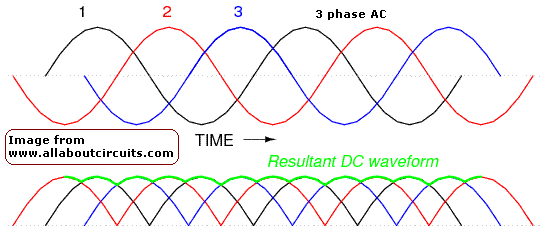

|
The supply must be a DC supply with a current capability of at least what you want to run the cell at and a Voltage somewhere between 3.5 and 7 Volts. The positive is connected to the Anode and the negative to the Cathode.
The question is often asked: What Voltage do I need to make Chlorate or Perchlorate?
The power supply for making Sodium
Chlorate or Perchlorate can be quite a crude affair or it can be as
sophisticated as you like. It would be nice to have a supply that has a
programmable current. This ideal supply would also have a fully smoothed output,
built in Voltage and current meters, a Coulomb meter (measures Ampere hours) and
be efficient.
To buy a supply like this would be expensive. On the other extreme a computer
power supply, a battery charger or a rewound microwave oven transformer + rectifier can be used.
A car battery charger has a nominal 13 Volts out when supplying relatively small currents.
You may have to use the six Volt setting (if your charger has one) as
the current may be too high if you use the twelve Volt setting. It should be
noted that the '12 volt' setting may not be 13 Volts when you connect the
charger to the cell. Chargers have bad Voltage regulation (an necessity when it
comes to charging batteries and an advantage in our application) and the Voltage
will drop when you connect it to the cell. It will depend on the actual charger
type and size of charger. If your charger has only a twelve Volt setting and it
is driving too much current into the cell you could consider putting two cells
in series. You can also use resistors or diodes to lower the current into the
cell by putting them in series with the supply line going into the cell.
An AC welder is a good supply to use for a cell but the output MUST be rectified before applying it to the cell. A DC welder will do too. The welder will be a constant current generator but its lowest current setting may be too big for your set up (size of Anode and cell volume). There is also the disadvantage of the welders high open circuit Voltage. When you disconnect the welder it's output voltage will rise to maybe 80V. If, when your cell is running, one of the connections going to the Anode or Cathode gets corroded the voltage will rise across this bad connection as the welder forces in the constant current. This will lead to the connection failing by becoming red hot. This may permanently damage your Anode or perhaps cause a fire/explosion. A welder makes a good supply for an established cell and setup that has good connections, but it is a bad supply for experimenting with.
Be careful with supplies that do not have smooth DC output, like welders and crude battery chargers.
With a Pt Anode it is recommended to have
NO ripple on the supply as this promotes Pt erosion (ripple must be 50Hz or less to cause problems, most supplies will have a ripple of 100Hz).
Also with Titanium substrate Anodes the peaks of the Voltage may raise the current density on the Anode to an unwise level (Voltage too high) and this may cause the destruction of the Anode as the Ti (Valve metal) may get attacked at the higher Voltages.
Computer power supplies are a cheap power supply solution for the cell.
A suitable supply can be made from a microwave oven transformer (MOT) and a rectifier.
See here for some info. rewinding MOT's.
It should be noted that the current/voltage going into your cell with the
power transformer and rectifier will not be a smooth DC current/Voltage. A capacitor (a few micro farads per milliamp) can be
connected across the cell so as to smooth the current and Voltage. It should be
noted that using too large a capacitor can lead to problems as the transformer
may not be able to supply the high peak current pulses that are characteristic
of capacitor smoothed supplies. The good old unsmoothed current does the job OK.
There are some scope pictures here of the current and Voltage obtained accross a cell with a simple transformer and rectifier set up.
Industrial cells uses simple 'raw' rectified (unsmoothed) power. It should be noted that these supplies will be coming from three phase supplies which, when rectified give much smoother (much less ripple) power when compared to rectified single phase power. Large industrial producers may even have access to 6 phase supplies.

HIT THE BACK BUTTON ON YOUR BROWSER